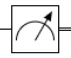
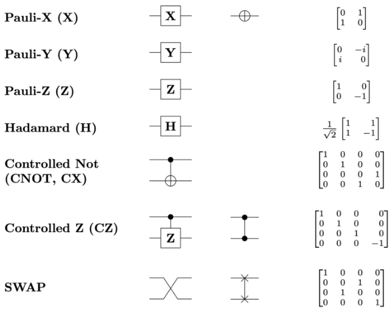
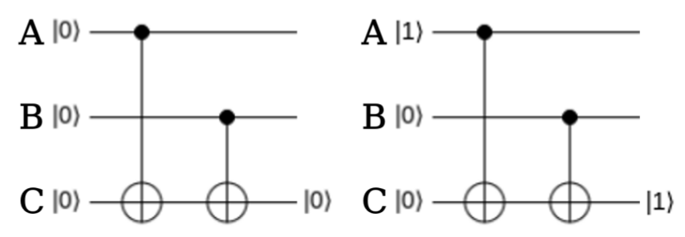

Квантові Обчислення, Алгоритми та Телепортація
У цій нотатці я спробую простою мовою, не вдаючись до занадто глибокої фізики розповісти базові речі про квантові обчислення. Утім, не очікуйте чогось простого, ми, все таки, говоримо про серйозну науку: для сприйняття статті вам знадобиться знати лінійну алгебру та трохи про ймовірності. Ми поговоримо про основну мету квантових обчислень, яка математика за цим стоїть, а також про протокол телепортації. Я також уже написав сторінку на трохи складнішу тему, що може слугувати логічним продовженням цієї: квантове машинне навчання, раджу приступити до неї після поточної. Усі сторінки пов'язані з квантовими обчисленнями можна подивитися тут.
Для початку, треба розуміти, що квантові комп'ютери, в цілому, задумувались, як машини з кращою можливістю обчислення задач квантової фізики. Однак, їх можна використовувати на задачах від класичних математичних до задач квантової хімії. Варто зазначити, що знаходження, для чого саме "в класичному житті" застосовувати ці технології – все ще відкрите питання. Про переваги квантових комп'ютерів над звичайними важко сказати однозначно. Справа в тому, що на деяких задачах звичайні комп'ютери навіть швидше, а сучасні квантові комп'ютери взагалі й не дуже потужні. Існує навіть дискусія, чи фізично можливо побудувати квантові комп'ютери достатньо великі для виконання практичних задач. Основні ж переваги квантових машин перед класичними пов'язані з убудованим паралелізмом та можливістю "заплутувати" кубіти (аналоги бітів).
Паралелізм (тобто виконання декількох обчислень одночасно) виникає через те, що квантові біти можуть бути у проміжних станах між 0 та 1, а будь-які дії над таким кубітом "у суперпозиції" будуть умовно одночасно проводитись і над ним у стані 0, і над ним у стані 1, що дає швидкісні переваги. Це важко збагнути, не переглянувши купу різних прикладів, тому я раджу спочатку спиратися виключно на математику в розумінні всього, що відбувається.
Заплутування кубітів – це дещо інше й може виникати тільки тоді, коли ми розглядаємо систему з декількох кубітів. По суті, це певна залежність двох кубітів, що дозволяє "телепортувати" інформацію на будь-які відстані. Цього, втім, замало для побудови повноцінного квантового зв'язку. Саме це, очевидно, й використовується в протоколі телепортації.
Про все це буде детальніше далі.
- Підґрунтя квантових обчислень
- Вимірювання
- Квантові схеми
- Алгоритм Дойча-Йожи
- Квантова заплутаність
- Протокол телепортації
Підґрунтя квантових обчислень
Кубіт (з англ. Qubit) – аналог звичайного комп'ютерного біту, одиниця інформації квантового комп'ютера. Може приймати значення \(|0⟩\) та \(|1⟩\) (пояснення дужок вигляду \(|\cdot⟩\) трохи згодом, наразі вважайте, що вони просто частина назви вектора), аналогічно звичайному біту, однак також має додаткові стани.
Кубіти математично передаються одиничним вектором у \(\mathbb{C}^2\). Тобто, наприклад, \(|ψ⟩ = \frac{1}{\sqrt{2}}\begin{pmatrix}1 \\ 1\end{pmatrix}\) – можливий стан кубіта. Важливо, що стани \(|0⟩\) та \(|1⟩\) суть базисними. \[|0⟩ = \begin{pmatrix}1 \\ 0\end{pmatrix}\] \[|1⟩ = \begin{pmatrix}0 \\ 1\end{pmatrix}\] Отже, усі інші стани \(|ψ⟩ = \begin{pmatrix}a \\ b\end{pmatrix}\) суть лінійними комбінаціями \(a|0⟩ + b|1⟩\) базисних станів та називаються станами суперпозиції. Також виділяють ще 4 умовно основних стани \(|+⟩ = \frac{1}{\sqrt{2}}\begin{pmatrix}1 \\ 1\end{pmatrix}; |-⟩ = \frac{1}{\sqrt{2}}\begin{pmatrix}1 \\ -1\end{pmatrix}; |R⟩ = \frac{1}{\sqrt{2}}\begin{pmatrix}1 \\ i\end{pmatrix}; |L⟩ = \frac{1}{\sqrt{2}}\begin{pmatrix}1 \\ -i\end{pmatrix}\). Ми називаємо \(|+⟩, |-⟩\) базисом за віссю \(X\); \(|R⟩, |L⟩\) – базисом за віссю \(Y\); \(|0⟩, |1⟩\) – базисом за віссю \(Z\). Всі ці базиси ортонормальні, тобто кут між цими векторами – прямий, а довжина їх – 1. Однак для векторів з комплексних чисел уявляти все це геометрично дуже важко. Тому застосовують такий метод візуялізації як сфера Блоха (малюнок 1), на якій кути подвоєні, тобто перпендикулярні вектори тут протилежні й знаходяться на одній вісі.

Сфера Блоха дає графічне розуміння про те, що відбувається зі станом кубіту. Це дуже зручний спосіб візуалізації векторів, та треба розуміти, що це ніяк не правдиве зображення, а лише схема. Два різних стани кубіту можуть позначатися однаково на сфері Блоха, це відбувається через подвоєння кутів між векторами. Надалі ми часто звертатимемося до цієї сфери задля створення інтуїтивного розуміння дивних речей.
Квантовий комп'ютер змінює стан кубіту, однак стан має залишатися одиничним вектором у комплексних числах, а всі операції з кубітами - лінійні (доведення цього факту, на жаль, вимагає трохи складніших термінів з квантової фізики). Тому квантові ґейти (або квантові вентилі, тобто окремі дії) на окремих кубітах можна записати математично у вигляді унітарних комплексних матриць \(\hat{U}\), тобто таких що \(\hat{U}^†\hat{U} = \hat{I}\), де \(\hat{I}\) – одинична матриця, \(\hat{U}^†\) – транспонована косплексно-спряжена (або ермітово-спряжена) до \(\hat{U}\). З цього випливає, що всі квантові алгоритми мають бути оборотними, бо до всіх унітарних операцій можна знайти обернені. Власне, для якоїсь унітарної матриці \(\hat{U}\), оберненою буде \(\hat{U}^†\) за означенням.
Важливий принцип застосування суперпозиції виникає саме з лінійности усіх операцій. Подіявши оператором \(\hat{U}\) на кубіт у стані \(|\psi⟩ = a|0⟩ + b|1⟩\), ми переведемо цей кубіт у стан \(|\phi⟩ = \hat{U}|\psi⟩ = a\hat{U}|0⟩ + b\hat{U}|1⟩\). За умови, що ні \(a\), ні \(b\) не є нулем, \(|\phi⟩\) матиме інформацію про те, що станеться як із \(|0⟩\) так і з \(|1⟩\). Тобто виникає певний аналог паралельних обчислень: ми одразу прораховуємо дію \(\hat{U}\) на двох класичних значеннях.
Розгляньмо дуже популярний ґейт Гадамара (або Адамара, з англ. Hadamard gate): \[\hat{H} = \frac{1}{\sqrt{2}}\begin{pmatrix}1 & 1 \\1 & -1\end{pmatrix}\] Цей ґейт має наступні корисні властивості: \[\hat{H}|0⟩ = |+⟩\] \[\hat{H}|1⟩ = |-⟩\] Як правило, на початку виконання квантового алгоритму, всі кубіти мають стан \(|0⟩\), тому якщо ми хочемо перевести нас у стан суперпозиції \(|+⟩\), ми користуємось ґейтом Адамара. Цікаво, що всі ґейти можна сприймати, як повороти на сфері Блоха. Ґейт Адамара, наприклад, повертає на пів оберта відносно вісі, що проходить рівно між віссю \(X\) та \(Z\) (малюнок 2). Не важко показати, що застосувавши цей ґейт Адамара двічі, ми отримаємо початковий стан: \[\hat{H}\hat{H}|0⟩ = \hat{H}|+⟩ = |0⟩\] Отже, \(\hat{H}\hat{H} = \hat{I}\) (що так само можна отримати алгебраїчно).

Звісно, є й інші ґейти, які ми будемо використовувати: \[\hat{X} = \begin{pmatrix}0 & 1 \\1 & 0\end{pmatrix}; -\text{ Х-ґейт або X-not-ґейт, тобто ґейт заперечення; пів оберта відносно вісі } X\] \[\hat{X}|1⟩ = |0⟩\] \[\hat{X}|0⟩ = |1⟩\] Аналогічні обертання існують і відносно осей \(\hat{Y} = \begin{pmatrix}0 & -i \\i & 0\end{pmatrix}\) та \(\hat{Z} = \begin{pmatrix}1 & 0 \\0 & -1\end{pmatrix}\), але вони не так часто вживаються.
Як я вже сказав, усі ґейти можна сприймати як обертання на сфері Блоха на певний кут \(\theta\). Саме тому ми можемо узагальнити вигляд однокубітного квантового ґейту в залежності від осі повороту: \[\hat{RX}(θ) = \begin{pmatrix}\cos\frac{θ}{2} & -\sin\frac{θ}{2}\\ \sin\frac{θ}{2} & \cos\frac{θ}{2}\end{pmatrix}\] \[\hat{RY}(θ) = \begin{pmatrix}\cos\frac{θ}{2} & -i\sin\frac{θ}{2}\\ \sin\frac{θ}{2} & \cos\frac{θ}{2}\end{pmatrix}\] \[\hat{RZ}(θ) = \begin{pmatrix}e^{-\frac{i\theta}{2}} & 0\\ 0 & e^{\frac{i\theta}{2}}\end{pmatrix}\] де, скажімо, \(\hat{RX}(θ)\) повертає стан кубіту на кут \(θ\) за віссю \(X\). Або ще далі узагальнити для довільної вісі: \(\hat{R}_{\vec{v}}(θ) = \exp[-\frac{iθ\hat{\vec{σ}}\vec{v}}{2}]\), де \(θ\) – кут обертання; \(\vec{v}\) – тривимірний одиничний вектор осі обертання на сфері Блоха; \(\hat{\vec{σ}}\) – специфічний об'єкт, вектор з матриць вигляду \(\hat{\vec{σ}}=\{\hat{X}, \hat{Y}, \hat{Z}\}\), тобто \(\hat{\vec{σ}}\vec{v} = (\hat{X}v_x + \hat{Y}v_y + \hat{Z}v_z)\). Це непогано підходить для параметризації схем і машинного навчання, але для простих алгоритмів та цієї нотатки не так важливо.
Квантові ґейти можуть діяти не тільки на один кубіт, бо й у комп'ютерах більше одного кубіту як правило. Якщо щоб математично описати стан системи з одного кубіта ми використовуємо вектор з двох елементів, то для для двох кубітів нам знадобиться вектор з \(\mathbb{C}^4\). При тому, наприклад, якщо перший кубіт у стані \(|1⟩\), а другий у \(|0⟩\) то загальний вектор стану системи: \[|01⟩ = |0⟩ \otimes |1⟩ = \begin{pmatrix}1 \\ 0\end{pmatrix} \otimes \begin{pmatrix}0 \\ 1\end{pmatrix} = \begin{pmatrix}1\begin{pmatrix}0 \\ 1\end{pmatrix} \\ 0\begin{pmatrix}0 \\ 1\end{pmatrix}\end{pmatrix} = \begin{pmatrix}0 \\ 1 \\ 0 \\ 0\end{pmatrix}\] де \(\otimes\) – тензорний добуток (діє як показано: ми беремо другий вектор і множимо його на всі елементи першого, як на скаляри, просто складаючи результати підряд, тобто \(a\otimes b \ne b\otimes a\)). Не важко помітити, що \(|00⟩\), \(|01⟩\), \(|10⟩\) та \(|11⟩\) формують ортонормальний базис для \(\mathbb{C}^4\), отже всі двокубітні стани виражаються через ці базові вектори. Якщо ж ми маємо двокубітну систему й хочемо подіяти на другий кубіт ґейтом Гадамара, а на перший – запереченням, то ми маємо створити сумісний ґейт як матрицю в \(\mathbb{C}^{4 \times 4}\): \(\hat{H} \otimes \hat{X}\), а якщо ми хочемо подіяти на перший кубіт якимсь оператором \(\hat{U}\), а другий залишити як є, то ми скомбінуємо \(\hat{U}\) та оператор ідентичности: \(\hat{I} \otimes \hat{U}\). Це відбувається через наступну дуже корисну властивість такого тензорного добутку: \[(A\otimes B)(c \otimes d) = Ac \otimes Bd\] Тобто \[(\hat{U}\otimes \hat{V})(|q_1⟩ \otimes |q_0⟩) = \hat{U}|q_1⟩ \otimes \hat{V}|q_0⟩\] де \(\hat{U}\), \(\hat{V}\) – довільні ґейти, а \(|q_0⟩\), \(|q_1⟩\) – стани наших кубітів.
Дуже популярною двокубітною операцією є CNOT-ґейт, тобто ґейт контрольованого заперечення (з англ. Controlled NOT gate) за віссю \(X\): \[\hat{CX} = \begin{pmatrix}1 & 0 & 0 & 0 \\0 & 1 & 0 & 0 \\0 & 0 & 0 & 1 \\0 & 0 & 1 & 0\end{pmatrix}\] Такий ґейт інвертуватиме або не змінюватиме перший кубіт у залежності від того чи другий кубіт у стані \(|1⟩\) чи \(|0⟩\). Увага: нумерація кубітів залежить від нас, тому я би не прив'язувався до номерів кубітів. Більше того, цей ґейт можна застосовувати, скажімо, на першому та п'ятому кубітах якоїсь великої системи (тоді матриця буде трохи іншою, але схожою). Аналогічним чином визначаються \(\hat{CZ}\) та \(\hat{CY}\), однак це нам поки не знадобиться. Приклад для CNOT-ґейту: \[\hat{CX}|01⟩ = \begin{pmatrix}1 & 0 & 0 & 0 \\0 & 1 & 0 & 0 \\0 & 0 & 0 & 1 \\0 & 0 & 1 & 0\end{pmatrix} \begin{pmatrix}0 \\ 1 \\ 0 \\ 0\end{pmatrix} = \begin{pmatrix}0 \\ 1 \\ 0 \\ 0\end{pmatrix} = |01⟩\] \[\hat{CX}|10⟩ = \begin{pmatrix}1 & 0 & 0 & 0 \\0 & 1 & 0 & 0 \\0 & 0 & 0 & 1 \\0 & 0 & 1 & 0\end{pmatrix} \begin{pmatrix}0 \\ 0 \\ 1 \\ 0\end{pmatrix} = \begin{pmatrix}0 \\ 0 \\ 0 \\ 1\end{pmatrix} = |11⟩\]
Вимірювання
Усі дії в квантовому комп'ютері мають бути оборотними, а кубіти можуть мати проміжні стани між \(|1⟩\) та \(|0⟩\), пам'ятаєте? Що ж, усе це правда, але не зовсім. Справа в тому, що по завершенню квантового алгоритма нам необхідно поглянути, в якому стані ж знаходяться його кубіти. І щойно ми це зробимо, увесь стан системи кубітів сколапситься до якогось базисного стану. Тобто ми не зможемо "побачити" кубіт, скажімо, в стані \(\frac{1}{\sqrt{2}}(|0⟩+|1⟩)\) при вимірюванні, зазвичай, ми побачимо лише або стан нуль, або стан один (хоча можна вимірювати трохи по-іншому, за іншим базисом, але суть одна: можливо побачити лише два взаємно перпендикульярних стани з усіх). Отже, наприкінці кожного алгоритму, коли ми виміряємо результат, ми цим проведемо необоротну операцію. То яка ж користь у цих станах суперпозиції? Справа в тому, що кубіт колапситься до того чи іншого стану з різною ймовірністю, залежно від свого стану, тобто нас цікавить написання алгоритмів, які з високою ймовірністю дадуть нам корисний результат при вимірюванні. У стані \(|1⟩\) імовірність кубіту колапснутися до \(|1⟩\) – сто відсотків. Кубіт у стані \(\frac{1}{\sqrt{2}}(|0⟩+|1⟩)\) з однаковою ймовірністю колапситься до \(|1⟩\) та \(|0⟩\). Це можна бачити з однакових коєфіцієнтів при базисних векторах у розкладі за базисом, за яким ми вимірюємо. Ці коєфіцієнти також називаються амплітудами. Також це можна бачити з того, що цей стан знаходиться чітко на екваторі між \(|1⟩\) та \(|0⟩\) на сфері Блоха.
Як правило, в квантових обчисленнях загалом, ми запускаємо один алгоритм на одних даних багато разів, аби отримати розподіл імовірностей (скільки разів з усіх ми отримали той чи інший стан після вимірювання), адже сама ідея квантових алгоритмів це побудувати такий, що з максимальною імовірністю (але не завжди) дає правильну відповідь. Стан, який найчастіше трапляється, називаємо відповіддю алгоритму. Іноді замість "запуск алгоритму" вживається також термін "експеримент".
Вимірювання — можливо найважча частина базової теорії. Не сприйняти це з першого разу було б цілком нормально, особливо без уже маючихся знань з квантової механіки. Для того аби точніше зрозуміти математику, що лежить за вимірюванням, потрібно осягнути, що в результаті вимірювання за базисом \(Z\) (тобто стандартний базис \(|1⟩\) та \(|0⟩\)) ми проєктуємо стан системи \(|\psi⟩\) на власні вектори відповідного оператора \(\hat{Z} = \begin{pmatrix}1 & 0 \\0 & -1\end{pmatrix}\) (його ми вже розглядали), якими власне й будуть \(|1⟩\) та \(|0⟩\) з відповідними власними значеннями \(-1\) та \(1\). Це правильно й у загальному випадку й випливає з квантової механіки: спостерігаємі значення для оператора – це його власні значення. Тобто, для \(\hat{Z}\) це \(-1\) та \(1\). Якщо ми виміряли 1, то кубіт колапснувся до відповідного власного вектору \(|0⟩\). Інакше – до \(|1⟩\). Саме тому вимірювання за класичним базисом \(|1⟩\), \(|0⟩\) і називається вимірюванням за віссю \(Z\).
Очікування вимірювання за \(Z\) (тобто очікуване значення; умовно кажучи, середнє з урахуванням імовірностей) для якогось стану \(|\psi⟩\) задається як \[\mathbb{E}(\hat{Z}) = ⟨\psi|\hat{Z}|\psi⟩\] де \(⟨\psi|\) – комплексно спряжений транспонований вектор до \(|\psi⟩\), тобто для \(|ψ⟩ = \begin{pmatrix}a \\ b\end{pmatrix}\), \(⟨ψ| = \begin{pmatrix}\bar{a} & \bar{b}\end{pmatrix}\), а \(⟨ψ⟩ = \begin{pmatrix}\bar{a} & \bar{b}\end{pmatrix}\begin{pmatrix}a \\ b\end{pmatrix} = 1\). Наприклад, для \(|ψ⟩ =\frac{1}{\sqrt{2}}(|0⟩+|1⟩)\), \(\mathbb{E}(\hat{Z}) = 0\), тобто рівно посередині між -1 та 1. У загальному ж випадку можна вимірювати за іншими операторами (за \(X\), \(Y\), чи майже будь-чим іще), заміняючи у тій формулі \(\hat{Z}\) на інші оператори. Звісно, імовірності тоді зміняться. Для того самого стану \(|ψ⟩ =\frac{1}{\sqrt{2}}(|0⟩+|1⟩)\) при вимірюванні за \(X\), \(\frac{1}{\sqrt{2}}(|0⟩+|1⟩)\) вже буде власним значенням \(\hat{X}\), отже імовірність отримати відповідне значення буде повною 1.
Звідси, ймовірність виміряти в стані \(|ψ⟩\) конкретне власне значення \(λ_i\), а отже й імовірність нашого стану колапсувати до відповідного власного вектору \(|v_i⟩\) оператора \(\hat{U}\) буде дорівнювати очікуванню проєкції на оператор \(|v_i⟩⟨v_i|\), де \(|v_i⟩\) єдиний власний вектор (підставляємо \(|v_i⟩⟨v_i|\) у формулу для очікування): \[\mathbb{P}(λ_i) = \mathbb{E}(|v_i⟩⟨v_i|) = ⟨\psi|v_i⟩⟨v_i|\psi⟩ = |⟨v_i|\psi⟩|^2\] Це називається правилом Борна. Додатково можемо розглянути класичні випадки: імовірності виміряти 0 та 1 для якогось довільного стану \(α|0⟩+β|1⟩\). \[\mathbb{P}(|0⟩) = |⟨0|(α|0⟩+β|1⟩)|^2 = |⟨0|α|0⟩+⟨0|β|1⟩|^2 = |⟨0|α|0⟩+0|^2 = |α⟨0⟩|^2 = |α|^2\] \[\mathbb{P}(|1⟩) = |⟨1|(α|0⟩+β|1⟩)|^2 = |⟨1|α|0⟩+⟨1|β|1⟩|^2 = |0+⟨1|β|1⟩|^2 = |β⟨1⟩|^2 =|β|^2\]
Квантові схеми
Математика, звісно, добре, але записувати цілі алгоритми як послідовність використання операторів на наборі кубітів не є дуже зручно. Тому використовують певні ілюстративні діяграми, так звані квантові схеми.

Нижче наведено перелік позначень для основних операцій. Вимірювання позначається або як "ґейт" (просто схоже позначення) \(\text{M}\) (див. малюнок (3)), або як . Якщо явно не зазначено базис вимірювання, то мається на увазі стандартне вимірювання в базисі \(Z\).
Спробуймо побудувати простенькі квантові алгоритми за допомогою таких схем. Яку операцію може виконувати будь-який комп'ютер? Додавання! Що ж, побудуймо схему, що додаватиме два числа \(A\) та \(B\) у результуюче число \(С\). За числа \(A\), \(B\), \(C\) будемо поки що брати тільки 0 або 1. Додавання ми зробимо за модулем два: \[0 \oplus 0 = 0\] \[1 \oplus 0 = 1\] \[0 \oplus 1 = 1\] \[1 \oplus 1 = 0\]
Отже, на схемі має бути 3 кубіти \(A\), \(B\), \(C\). Зазвичай, усі кубіти ініціялізуються нулем, тобто \(|0⟩\). Для того аби надавати вхідним змінним \(A\) й \(B\) різних значень можна просто використовувати \(\hat{X}\), а от \(C\), думаю, логічно було б залишити в нулі спочатку. Далі додамо \(A\) до \(C\). Можете трохи подумати, яким ґейтом це краще зробити. Очевидно, він має бути на два кубіти. Гадаю, тут достатньо \(\hat{CX}\): ми обернемо \(C\) на 1, якщо \(A\) було 1, але нічого не зробимо інакше (себто коли \(A = |0⟩\)). Далі повторюємо для додавання для \(C\) та \(B\). Власне, це й усе. Залишилося виміряти наш кубіт. Погляньмо на результуючу схему:
Таку схему можна використовувати, як частину більшої, коли нам потрібна операція \(\oplus\), також відома як XOR. У якості завдання спробуйте створити схему, що додаватиме більші бінарні числа, на кшталт чисел з двох біт. Для цього вам можуть знадобитися контрольовані ґейти з більшою кількістю контрольних кубітів, наприклад \(CCX\), що інвертує цільовий кубіт тоді й тільки тоді, коли два контрольних кубіти мають стан \(|1⟩\) Також рекомендую цей сайт у якості швидкого простого способу побудови схем не за допомогою коду.
Якщо вам цікаво трохи розвинути свою інтуїцію щодо квантової механіки та квантових обчислень, можу також порадити підбірку квантових ігор, однак не загравайтесь).
Алгоритм Дойча-Йожи
Один із перших квантових алгоритмів, що показав кращі результати, ніж будь-який з можливих на класичному комп'ютері для певної задачі, був запропонований Девідом Дойчем та Річардом Йожею в 1992 році.
Постановка задачі. Існує бінарна функція \(f:\{0,1\}^n \rightarrow \{0,1\}\), тобто така, що приймає \(n\) бінарних значень (нулі та одиниці) та повертає або 0 або 1. Ми знаємо, що ця функція є або сталою (якщо вона або завжди повертає 1, або завжди 0), або вона є збалансованою (тобто повертає 1 рівно на половині можливих наборів аргументів, а на інших — 0). Задача полягає в написанні алгоритму, що для невідомої функції \(f\) визначає, чи є вона збалансованою, чи сталою. Функцію \(f\) можна рахувати на окремих наборах аргументів, однак ми не знаємо її формули явно. Інакше кажучи, функцію задано у форматі "black box".
Класичний алгоритм (ми розглядатимемо лише детерміністичний, тобто без рандому та паралелізму). Достатньо перевірити \(f\) на \(2^{n-1}+1\) (у найгіршому випадку) різних наборів аргументів, аби перевірити більшість варіянтів. Знаючи, що на них функція приймає однакові значення ми дізнаємось, що функція стала. Інакше вона точно є збалансованою, адже інших функцій не може бути дано за умовою. Отже, в термінах кількості запитів до \(f\) залежно від \(n\) цей алгоритм дає нам експоненційну верхню оцінку складности.
Квантовий алгоритм (Дойча-Йожа). Тут нам буде достатньо однієї перевірки функції \(f\). Трюк у тому, що сама функція має бути запрогамована у вигляді специфічної квантової схеми (але знову таки, формулу ми не знаємо, маємо тільки вже готову приховану від нас схему), що дозволить нам перевіряти її не на одному класичному стані за раз, а одразу запустити цю схему на стані квантової суперпозиції [i]. А саме, для функції \(f:\{0,1\}^n \rightarrow \{0,1\}\) ми хочемо мати квантовий оракул \(\hat{U}_f\) (тобто те, що я й казав, квантовий багатокубітний ґейт чи прихована схема, що кодує нашу функцію) наступного вигляду: він діє на \(n\) кубітів, що просто кодують вхідні данні для функції. Ми хочемо, щоби для якогось стану \(|x_1⟩ \otimes |x_2⟩ \otimes ... \otimes |x_n⟩\), наш оракул давав \(\hat{U}_f(|x_1⟩ \otimes |x_2⟩ \otimes ... \otimes |x_n⟩) = (-1)^{f(x_1, x_2 ... x_n)}|x_1⟩ \otimes |x_2⟩ \otimes ... \otimes |x_n⟩\), тобто додавав мінус перед тими наборами, на яких функція набуває значення 1. Це може виглядати дивно й занадто заплутано, проте цей спосіб задати нашу функцію на квантовому комп'ютері стане нам у нагоді. Такий вид квантового оракулу називається фазовим, а загалом можна кодувати функцію й по-іншому.
Подивімося на схему алгоритму. Спочатку ми кодуємо загальний стан рівномірної суперпозиції, подіявши на всі кубіти ґейтом Гадамара. Потім проганяємо цей стан суперпозиції через наш оракул. Потім знову діємо ґейтами Гадамара, ніби повертаючи все назад. Неймовірно, але в результаті такого не дуже складного візуально алгоритму ми отримуватимемо після вимірювання вектор з нулів (тобто всі кубіти колапсують до \(|0⟩\)) тоді й тільки тоді, коли функція \(f\) є сталою. Так і розпізнаватимемо, яка функція є належить до якого класу. Якщо \(f\) є сталою, то наприкінці алгоритму ми матимемо або стан \(|00...0⟩\) якщо \(f \equiv 0\), або \(-|00...0⟩\) якщо \(f \equiv 1\). Обидва з цих станів мають стовідсоткову ймовірність колапсувати до \(|00...0⟩\) при вимірюванні. В одночас, для збалансованих функцій отримуватимемо й інші стани.
Квантова заплутаність
Настав час поговорити про квантову заплутаність (з англ. Quantum entanglement). Це фізичне (квантовомеханічне навіть) явище, коли стани декількох об'єктів пов'язані між собою. Звісно, нас це цікавить у контексті заплутування кубітів, як правило двох. На практиці, заплутаність двох кубітів означатиме, що вимірявши один з них, ми знатимемо додаткову інформацію про стан другого без вимірювання, або взагалі точно знатимемо, до якого стану колапсує другий. Наприклад, наша система може бути побудована таким чином (або "наш алгоритм побудований таким чином"), що для якихось двох кубітів \(i\) та \(j\), які ми вимірюємо й отримаємо бінарні значення \(m_i\) та \(m_j\) відповідно, виконується або \(m_i = 0 \Leftrightarrow m_j = 0\) (побачивши один кубіт у якомусь стані, знаємо, що інший точно колапситься до того самого). Або \(m_i = 0 \Leftrightarrow m_j = 1\) (навпаки). У першому випадку у наших кубітів "пряма залежність", себто один дублює стан іншого, тут можлива тільки ситуація, коли обидва кубіти однакового значення при вимірюванні: або "00", або "11". У другому випадку — "залежність обернена": систему можна побачити або в стані "01", або в "10".
Чому таке можливо? Хіба наша квантова система тут не завжди складається з окремих кубітів, які ми можемо розглядати окремо? Сюрприз (якими так наповнена квантова фізика) у тому, що ні. Не всі двокубітні стани можна записати як тензорний добуток двох однокубітних станів, а отже, ми не завжди можемо виокремити стани кубітів з системи. Для прикладу, стан двокубітного комп'ютеру \[|\psi⟩ = \frac{1}{\sqrt{2}}\begin{pmatrix}1 \\ 0 \\ 0 \\ 1\end{pmatrix} = \frac{1}{\sqrt{2}}(|00⟩+|11⟩)\] цілком можливий. Він не порушує правил: це вектор довжини 1 з \(\mathbb{C}^4\), однак ви не зможете записати його у вигляді \(|\psi⟩ = |\phi⟩ \otimes |\gamma⟩\) для якихось однокубітних станів \(|\phi⟩\) та \(|\gamma⟩\), тобто окремі кубіти, що знаходяться в цій системі, мають "неправильні" стани, що не можуть існувати самі по собі. Як створити такий стан на квантому комп'ютері? Побудуймо відповідну квантову схему:
Перевірмо, що ми отримали правильний стан, який хотіли: \[\hat{CX}(\hat{H} \otimes \hat{I})|00⟩ = \begin{pmatrix}1 & 0 & 0 & 0 \\0 & 1 & 0 & 0 \\0 & 0 & 0 & 1 \\0 & 0 & 1 & 0\end{pmatrix} \frac{1}{\sqrt{2}} \begin{pmatrix}1 & 0 & 1 & 0 \\0 & 1 & 0 & 1 \\1 & 0 & -1 & 0 \\0 & 1 & 0 & -1\end{pmatrix} \begin{pmatrix}1 \\ 0 \\ 0 \\ 0\end{pmatrix} = \frac{1}{\sqrt{2}} \begin{pmatrix}1 \\ 0 \\ 0 \\ 1\end{pmatrix}\]
Інтуїтивно це варто сприймати так: ми діємо ґейтом Гадамара на верхній (на схемі) кубіт. Отже він знаходиться у стані суперпозиції "між" 0 та 1. Тепер ми діємо \(\hat{CX}\), тобто залежно від того чи верхній кубіт 0 чи 1 ми обертаємо чи не обертаємо другий, в той час як цей кубіт, на який у нас накладається ця умова, є десь між цими станами. Отже тепер стан обох кубітів точно не 0 та не 1, до того ж, вони залежать від один одного. Знаючи що другий кубіт сколапсував до стану 1, наприклад, ми можемо встановити, що на ньому було проведено оборот. Тоді перший кубіт, за таких умов, теж має сколапсувати до стану 1, якщо виміряємо його, бо тільки в такому випадку ми б обернули другий кубіт. І навпаки, вимірявши якийсь із кубітів і отримавши 0, ми знаємо, що інший теж 0. Себто, тут математично можливі тільки дві ситуації при вимірюванні: "00" та "11".
Зазначу, що заплутаність не копіює стан кубіта до іншого, а робить їх "одним цілим", умовно кажучи. Узагалі, існує квантова теорема про некопіювання (або про заборону клонування), тобто нема способу скопіювати будь-який невідомий (це важливо) стан кубіту \(|\psi⟩\) до нового "порожнього" \(|0⟩\), якщо вимагати, що кубіти незалежні. Це трохи виходить із загального курсу статті, однак покажемо, чому це так (цей абзац можна пропускати). Припустимо, що маємо стан двокубітної системи \(|\psi⟩ \otimes |0⟩\) і ми хочемо написати алгоритм, який буде переводити її до стану \(|\psi⟩ \otimes |\psi⟩\). Отже ми хочемо знайти загальний двокубітний лінійний оператор \(\hat{U}\), що \(\hat{U}(|\psi⟩ \otimes |0⟩)=|\psi⟩ \otimes |\psi⟩\). Цей оператор має бути лінійним, якщо ми погоджуємося зі стандартною квантовою механікою (яка, звісно, є лише моделлю, тому, цілком імовірно, лише наближує правду). Припустімо, що в нашому стандартному базисі стан першого кубіту \(|\psi⟩\) виражається як \(|\psi⟩ = \alpha|0⟩ + \beta|1⟩\). Тоді має бути лінійний перехід: \[\begin{pmatrix}\alpha \\ \beta \end{pmatrix} \otimes \begin{pmatrix}1 \\ 0 \end{pmatrix}=\begin{pmatrix}\alpha \\ 0 \\ \beta \\ 0\end{pmatrix} \rightarrow \begin{pmatrix}\alpha \\ \beta \end{pmatrix} \otimes \begin{pmatrix}\alpha \\ \beta \end{pmatrix}=\begin{pmatrix}\alpha^2 \\ \alpha\beta \\ \alpha\beta \\ \beta^2\end{pmatrix}\] Зі степенів бачимо, що цей перехід не є лінійним, отже його не існує. Такі степені могли би з'явитися тільки, якщо сама матриця оператору \(\hat{U}\) також містила б \(\alpha\) та \(\beta\), а це означало би, що \(\hat{U}\) залежить від \(\alpha\) та \(\beta\). Фраза "стан \(|\psi⟩\) невідомий" означає саме те, оператор не може від нього залежати. Очевидно, вірно й обернене твердження, відоме як теорема про невидалення: з двох однакових невідомих станів \(|\psi⟩ \otimes |\psi⟩\), не можна видалити один та отримати \(|\psi⟩ \otimes |0⟩\), бо це так само нелінійний перехід.
Розглянутий нами стан \(|\psi⟩ = \frac{1}{\sqrt{2}}(|00⟩+|11⟩)\), насправді, доволі відомий як перший з так званих станів Белла, на яких базується протокол телепортації, про який ітиметься в наступному параграфі. Чотири стани Белла — двокубітні стани "максимальної заплутаности", що формують ортонормальний базис для \(\mathbb{C}^4\): \[|\Phi^{+}⟩ = |\Psi^{00}⟩ = \frac{1}{\sqrt{2}}(|00⟩+|11⟩)\] \[|\Psi^{+}⟩ = |\Psi^{01}⟩ = \frac{1}{\sqrt{2}}(|01⟩+|10⟩)\] \[|\Phi^{-}⟩ = |\Psi^{10}⟩ = \frac{1}{\sqrt{2}}(|00⟩-|11⟩)\] \[|\Psi^{-}⟩ = |\Psi^{11}⟩ = \frac{1}{\sqrt{2}}(|01⟩-|10⟩)\] де \(|\Psi^{00}⟩\), \(|\Psi^{01}⟩\), \(|\Psi^{10}⟩\), \(|\Psi^{11}⟩\) — позначення для станів Белла; а \(|\Phi^{+}⟩\), \(|\Psi^{+}⟩\), \(|\Phi^{-}⟩\), \(|\Psi^{-}⟩\) — альтернативні позначення для станів Белла. Загальна формула: \[|\Psi^{ij}⟩ = (\hat{X}^j\hat{Z}^i \otimes \hat{I})|\Psi^{00}⟩\]
Який у цьому сенс? Враховуючи, що стани Белла формують базис (так званий базис Белла), то ми можемо вимірювати нашу систему за цим базисом. Поставивши у відповідність кожному стандартному базисному вектору \(|ij⟩\) стан Белла \(|\Psi^{ij}⟩\), ми також можемо кодувати ту саму інформацію але в станах Белла: \[a|00⟩+b|01⟩+c|10⟩+d|11⟩ ⟹ a|\Psi^{00}⟩+b|\Psi^{01}⟩+c|\Psi^{10}⟩+d|\Psi^{11}⟩\] і потім користуватися вимірюванням за базисом Белла. Зиск тут такий, що з формули загального стану Белла видно, що ми оперуємо лише над одним кубітом: оператор \(\hat{X}^j\hat{Z}^i \otimes \hat{I}\) не змінює один з кубітів, а на інший діє \(\hat{X}^j\hat{Z}^i\). З цього робимо висновок, що ми можемо підготувати базовий стан \(|\Psi^{00}⟩\), на який діє наш оператор у формулі, а після цього закодувати будь-який двокубітний стан з \(|00⟩\), \(|01⟩\), \(|10⟩\), \(|11⟩\) використовуючи тільки один кубіт, тобто не роблячи жодних операцій на іншому. Суто теоретично ці два кубіти можна навіть розділити будь-якою відстанню, але доки ми маємо доступ до одного, то зможемо закодувати двобітну інформацію (але для її розкодування все одно знадобиться обидва кубіти). Це ще не протокол телепортації, але ми вже підходимо дуже близько.
Відповідну схему почнімо з кодування уже відомого нам стану \(|\Psi^{00}⟩\) — це перший етап. Далі ми можемо закодувати будь-який класичний стан, користуючись лише одним кубітом. Наприклад, для кодування 11 треба подіяти на один з кубітів \(\hat{X}\hat{Z}\), як показано на схемі нижче. Далі чисто теоретично має бути вимірювання за базисом Белла, як я сказав, але реальні квантові комп'ютери майже ніколи не мають таку можливість, тому простіше на цьому етапі перевести наш стан у відповідний для вимірювання за стандартним базисом. Як правило, це й називають вимірюванням за базисом Белла: ми діємо \((\hat{H} \otimes \hat{I})\hat{CX}\), що є оберненим оператором до нашого першого етапу \(\hat{CX}(\hat{H} \otimes \hat{I})\), тим самим умовно "розплутуємо" кубіти, а потім вимірюємо в стандартному базисі. Отримали алгоритм у три схематичних етапи:
Протокол телепортації
Гадаю, класичний спосіб пояснення протоколу телепортації — почати з постановки задачі. Є Аліса і є Боб — умовно, пункти A і B. Аліса хоче передати Бобу свій квантовий стан \(|\phi⟩ = \alpha|0⟩ + \beta|1⟩\), тобто ми хочемо передати стан кубіту з одного пункту в інший (саме перенести його, адже скопіювати, як ми знаємо з вищезгаданої теореми про заборону клонування, не вийде). Скориставшись квантово заплутаним станом та передачею двох додаткових класичних бітів (тобто обміном звичної, не квантової інформації), ми зможемо це зробити. Це називається телепортацією, бо в кінці процесу Аліса більше не має цього стану, але його має Боб.
Боб має один кубіт \(B\), а Аліса — два: свій \(A\) та додатковий \(S\). Спочатку Аліса та Боб створюють спільний заплутаний стан Белла \(|\Psi^{00}⟩_{AB}\) на своїх кубітах, а потім вони можуть забрати свої кубіти й розлетітися на різні планети. Аліса кодує бажаний стан на допоміжному кубіті \(|\phi⟩_S = \alpha|0⟩_S + \beta|1⟩_S\), а потім вимірює свої кубіти \(A\) та \(S\) у базисі Белла, що ми вже знаємо як робити (тобто спочатку вимірює застосовує на них \((\hat{H} \otimes \hat{I})\hat{CX}\), а потім вимірює в стандартному базисі). У процесі вимірювання оригінальний стан, звісно ж, стирається, як і стан кубіту \(A\), однак ми отримаємо два класичних біти інформації — результати цього вимірювання \(i\) та \(j\). Далі Алісі також знадобиться встановити короткочасний зв'язок з Бобом, щоби передати йому \(i\) та \(j\). Боб може точно відновити стан \(|\phi⟩\), якщо подіє на свій кубіт операторами \(\hat{X}\) та/або \(\hat{Z}\) в залежності від значень \(i\) та \(j\), схожим чином, як це було в загальній формулі станів Белла. Погляньмо на схему, так буде зрозуміліше:
Боб мусить діяти наступним чином, аби отримати необхідний стан: \[ji = 00 \rightarrow \text{Нічого не робити}\] \[ji = 01 \rightarrow \text{Застосувати } \hat{X}\] \[ji = 10 \rightarrow \text{Застосувати } \hat{Z}\] \[ji = 11 \rightarrow \text{Застосувати } \hat{Z}\hat{X}\] Варто зазначити, що на реальному квантовому комп'ютері можна використовувати відповідні контрольні ґейти \(\hat{CX}\) та \(\hat{CZ}\) і перенести вимірювання на кінець. Вони так само будуть діяти в залежності від станів кубітів \(A\) та \(S\).
Переконаймося в тому, що на кубіті Боба й справді буде стан \(|\phi⟩\). Для цього перепишемо алгоритм (з того моменту, коли ми вже маємо і стан Белла на нижніх кубітах і цільовий стан, але до вимірювання) у вигляді виразу: \[ (\hat{H} \otimes \hat{I} \otimes \hat{I})(\hat{CX} \otimes \hat{I})(|\phi⟩_S\otimes|\psi^{00}⟩_{AB}) = \] \[ = (\hat{H} \otimes \hat{I} \otimes \hat{I})(\hat{CX} \otimes \hat{I})\frac{1}{\sqrt{2}}(\alpha|000⟩ + \alpha|011⟩ + \beta|100⟩ + \beta|111⟩)\] Застосуємо \(\hat{CX}\) на нашому стані, а значить окремо на всіх базисних векторах: \[(\hat{H} \otimes \hat{I} \otimes \hat{I})\frac{1}{\sqrt{2}}(\alpha|000⟩ + \alpha|011⟩ + \beta|110⟩ + \beta|101⟩)\] Застосуємо \(\hat{Н}\) на одному з кубітів: \[\frac{1}{2}(\alpha(|000⟩ + |011⟩ + |100⟩ + |111⟩) + \beta(|010⟩ + |001⟩ - |110⟩ - |101⟩)) = \] \[= \frac{1}{2}( |00⟩_{SA}(\alpha|0⟩_B + \beta|1⟩_B) + \] \[ + |01⟩_{SA}(\alpha|1⟩_B + \beta|0⟩_B) + \] \[ + |10⟩_{SA}(\alpha|0⟩_B - \beta|1⟩_B) + \] \[ + |11⟩_{SA}(\alpha|1⟩_B - \beta|0⟩_B) )\] Тут можемо бачити, що ми маємо чотири схожі доданки. На цьому моменті за схемою ми маємо виконати вимірювання \(A\) та \(S\) уже в стандартному базисі. Подивимось, що станеться "на словах".
Якщо підсистема \(SA\) колапсує до \(|00⟩\), то \(В\) вже має стан \(|\phi⟩_B = \alpha|0⟩_B + \beta|1⟩_B\). Якщо підсистема \(SA\) колапсує до \(|01⟩\), то \(В\) має стан \(|\phi⟩_B = \alpha|1⟩_B + \beta|0⟩_B\) і залишається подіяти \(\hat{X}\). Якщо підсистема \(SA\) колапсує до \(|10⟩\), то \(В\) має стан \(|\phi⟩_B = \alpha|0⟩_B - \beta|1⟩_B\) і залишається подіяти \(\hat{Z}\). Аналогічно, якщо підсистема \(SA\) колапсує до \(|11⟩\), то \(В\) має стан \(|\phi⟩_B = \alpha|1⟩_B - \beta|0⟩_B\) і треба подіяти обома.
У завершення
У цій нотатці ми розглянули багато фундаментальних для квантових обчислень речей. Сподіваюся, це стане Вам у нагоді та ще більше зацікавить у темі, адже тут є величезне поле для теоретичних відкриттів і комп'ютерних досліджень. Я планую написати ще декілька вебсторінок різної складности в цьому напрямку, аби створити оглядовий мінікурс. Усі їх можна буде переглянути тут.